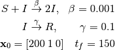
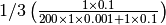
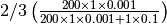
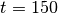

Introduction to compartmental modeling¶
Compartmental modeling is widely used among epidemiologists to simulate disease dynamics. While deterministic compartmental models (ODEs and PDEs) are fast to simulate, there are many cases where stochastic modeling (CME-based methods) is preferred. Stochastic framework provides distributions associated with characteristics of a process and rigorous procedures for inference. In addition, deterministic models do not provide an accurate description of the system when the population in any of the compartments is low. For example, consider the following simple SIR model.

In the above system, we start with 200 susceptible individuals, 1 infectious and 0 recovered. Twenty stochastic trajectories are simulated using Gillespie’s stochastic simulation algorithm (SSA) [1] and its results are compared to that of ODE45.

We can see that many of the SSA trajectories show no outbreak. This is due to having only one infectious individual in the initial state. Probability of the single infectious individual recovering in the next time step is  while infecting one of 200 susceptible individual is . At the same time, we also see SSA trajectories that contain earlier and larger outbreak (population of  ) compared to the trajectory of from deterministic simulation.
) compared to the trajectory of from deterministic simulation.
With a large number of SSA trajectories, we can obtain an accurate distribution of states in time. For example, the distribution of recovered individuals  at
at  using SSA trajectories looks like the following:
using SSA trajectories looks like the following:

Such distribution can be used to obtain many useful insights into the system. The first mode in the distribution (left peak) indicates that no large outbreak is observed almost half of the time by . The second mode indicates the type of population immunity that may be observed at . Looking at the same distribution in time can be used to study how the immunity changes over time.
As the size of population increases, SSA trajectories start looking more similiar to the ODE result and exhibit less variability among themselves. When we change the initial population to , we get the following result.

We note that intrinsic stochasticity may differ greatly from one model to another, depending on many factors, such as reaction rates, number of non-linear reactions, connectivity among different compartments, and population size. When a system contains compartments with a relatively large population where stochastcitity still matters, we can use an approximate method to speed up the simulation. Several popular spatial simulation methods are also supported in CMS, along with rare event (dwSSA and sdwSSA) and exit time simulation methods.
Footnotes
| [1] | Gillespie, Daniel T. “Exact stochastic simulation of coupled chemical reactions.” The Journal of Physical Chemistry 81.25 (1977): 2340-361. |